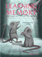

|
||||||||||||||||||||||||||
|
||||||||||||||||||||||||||
|
||||||||||||||||||||||||||

The Journal of Neuroscience, May 19, 2004, 24(20):4796-4806; doi:10.1523/JNEUROSCI.5654-03.2004
Previous Article | Next Article
Behavioral/Systems/Cognitive
Brain-Derived Neurotrophic Factor and Tyrosine Kinase Receptor B Involvement in Amygdala-Dependent Fear Conditioning
Lisa M. Rattiner, Michael Davis, Christopher T. French, andKerry J. Ressler Emory University School of Medicine, Center for Behavioral Neuroscience, Yerkes Research Center, Atlanta, Georgia 30329
Brain-derived neurotrophic factor (BDNF) and its receptor, tyrosine kinase receptor B (TrkB), play a critical role in activity-dependent synaptic plasticity and have been implicated as mediators of hippocampal-dependent learning and memory. The present study is the first to demonstrate a role for BDNF and TrkB in amygdala-dependent learning. Here, the use of Pavlovian fear conditioning as a learning model allows us to examine the concise role of BDNF in the amygdala after a single learning session and within a well understood neural circuit. Using in situ hybridization, mRNA levels of six different trophic factors [BDNF, neurotrophin (NT) 4/5, NGF, NT3, aFGF, and bFGF) were measured at varying time points during the consolidation period after fear conditioning. We found temporally specific changes only in BDNF gene expression in the basolateral amygdala after paired stimuli that supported learning but not after exposure to neutral or aversive stimuli alone. Using Western blotting, we found that the Trk receptor undergoes increased phosphorylation during this consolidation period, suggesting an activation of the receptor subsequent to BDNF release. Furthermore, disruption of neurotrophin signaling with intra-amygdala infusion of the Trk receptor antagonist K252a disrupted acquisition of fear conditioning. To address the specific role of the TrkB receptor, we created a novel lentiviral vector expressing a dominant-negative TrkB isoform (TrkB.T1), which specifically blocked TrkB activation in vitro. In vivo, TrkB.T1 lentivirus blocked fear acquisition without disrupting baseline startle or expression of fear. These data suggest that BDNF signaling through TrkB receptors in the amygdala is required for the acquisition of conditioned fear.
Key words: BDNF; TrkB; amygdala; fear conditioning; neurotrophins; NGF; FGF; NT4/5; lentivirus
Received Dec 22, 2003; revised February 23, 2004; accepted February 27, 2004.
This article has been cited by other articles:
M. A. Davis-Lopez de Carrizosa, C. J. Morado-Diaz, S. Morcuende, R. R. de la Cruz, and A. M. Pastor
Nerve Growth Factor Regulates the Firing Patterns and Synaptic Composition of Motoneurons
J. Neurosci., June 16, 2010; 30(24): 8308 - 8319.
[Abstract] [Full Text] [PDF]
T. Jovanovic and K. J. Ressler
How the Neurocircuitry and Genetics of Fear Inhibition May Inform Our Understanding of PTSD
Am J Psychiatry, June 1, 2010; 167(6): 648 - 662.
[Abstract] [Full Text] [PDF]
H. C. Pape and D. Pare
Plastic Synaptic Networks of the Amygdala for the Acquisition, Expression, and Extinction of Conditioned Fear
Physiol Rev, April 1, 2010; 90(2): 419 - 463.
[Abstract] [Full Text] [PDF]
D. C. Choi, K. A. Maguschak, K. Ye, S.-W. Jang, K. M. Myers, and K. J. Ressler
Prelimbic cortical BDNF is required for memory of learned fear but not extinction or innate fear
PNAS, February 9, 2010; 107(6): 2675 - 2680.
[Abstract] [Full Text] [PDF]
I. Jin, H. Huang, B. Smith, and J. Farley
Protein Tyrosine Kinase Involvement in Learning-Produced Changes in Hermissenda Type B Photoreceptors
J Neurophysiol, December 1, 2009; 102(6): 3573 - 3595.
[Abstract] [Full Text] [PDF]
G. Musumeci, C. Sciarretta, A. Rodriguez-Moreno, M. Al Banchaabouchi, V. Negrete-Diaz, M. Costanzi, V. Berno, A. V. Egorov, O. von Bohlen und Halbach, V. Cestari, et al.
TrkB Modulates Fear Learning and Amygdalar Synaptic Plasticity by Specific Docking Sites
J. Neurosci., August 12, 2009; 29(32): 10131 - 10143.
[Abstract] [Full Text] [PDF]
Y.-F. Liu, H.-i. Chen, C.-L. Wu, Y.-M. Kuo, L. Yu, A-M. Huang, F.-S. Wu, J.-I. Chuang, and C. J. Jen
Differential effects of treadmill running and wheel running on spatial or aversive learning and memory: roles of amygdalar brain-derived neurotrophic factor and synaptotagmin I
J. Physiol., July 1, 2009; 587(13): 3221 - 3231.
[Abstract] [Full Text] [PDF]
H. Yu, Y. Wang, S. Pattwell, D. Jing, T. Liu, Y. Zhang, K. G. Bath, F. S. Lee, and Z.-Y. Chen
Variant BDNF Val66Met Polymorphism Affects Extinction of Conditioned Aversive Memory
J. Neurosci., April 1, 2009; 29(13): 4056 - 4064.
[Abstract] [Full Text] [PDF]
A. H. Kidane, G. Heinrich, R. P. H. Dirks, B. A. de Ruyck, N. H. Lubsen, E. W. Roubos, and B. G. Jenks
Differential Neuroendocrine Expression of Multiple Brain-Derived Neurotrophic Factor Transcripts
Endocrinology, March 1, 2009; 150(3): 1361 - 1368.
[Abstract] [Full Text] [PDF]
M. A. D.-L. de Carrizosa, C. J. Morado-Diaz, J. J. Tena, B. Benitez-Temino, M. L. Pecero, S. R. Morcuende, R. R. de la Cruz, and A. M. Pastor
Complementary Actions of BDNF and Neurotrophin-3 on the Firing Patterns and Synaptic Composition of Motoneurons
J. Neurosci., January 14, 2009; 29(2): 575 - 587.
[Abstract] [Full Text] [PDF]
J. E. Ploski, V. J. Pierre, J. Smucny, K. Park, M. S. Monsey, K. A. Overeem, and G. E. Schafe
The Activity-Regulated Cytoskeletal-Associated Protein (Arc/Arg3.1) Is Required for Memory Consolidation of Pavlovian Fear Conditioning in the Lateral Amygdala
J. Neurosci., November 19, 2008; 28(47): 12383 - 12395.
[Abstract] [Full Text] [PDF]
F. Jeanneteau, M. J. Garabedian, and M. V. Chao
Activation of Trk neurotrophin receptors by glucocorticoids provides a neuroprotective effect
PNAS, March 25, 2008; 105(12): 4862 - 4867.
[Abstract] [Full Text] [PDF]
M. Niculescu, S. A. Perrine, J. S. Miller, M. E. Ehrlich, and E. M. Unterwald
Trk: A Neuromodulator of Age-Specific Behavioral and Neurochemical Responses to Cocaine in Mice
J. Neurosci., January 30, 2008; 28(5): 1198 - 1207.
[Abstract] [Full Text] [PDF]

C. M. Markham and K. L. Huhman
Is the medial amygdala part of the neural circuit modulating conditioned defeat in Syrian hamsters?
Learn. Mem., January 3, 2008; 15(1): 6 - 12.
[Abstract] [Full Text] [PDF]
S. V. Jones, L. Stanek-Rattiner, M. Davis, and K. J. Ressler
Differential regional expression of brain-derived neurotrophic factor following olfactory fear learning
Learn. Mem., December 17, 2007; 14(12): 816 - 820.
[Abstract] [Full Text] [PDF]
E. Knapska, K. Radwanska, T. Werka, and L. Kaczmarek
Functional Internal Complexity of Amygdala: Focus on Gene Activity Mapping After Behavioral Training and Drugs of Abuse
Physiol Rev, October 1, 2007; 87(4): 1113 - 1173.
[Abstract] [Full Text] [PDF]
C. Wang, E. Bomberg, A. Levine, C. Billington, and C. M. Kotz
Brain-derived neurotrophic factor in the ventromedial nucleus of the hypothalamus reduces energy intake
Am J Physiol Regulatory Integrative Comp Physiol, September 1, 2007; 293(3): R1037 - R1045.
[Abstract] [Full Text] [PDF]
L.-C. Ou and P.-W. Gean
Transcriptional Regulation of Brain-Derived Neurotrophic Factor in the Amygdala during Consolidation of Fear Memory
Mol. Pharmacol., August 1, 2007; 72(2): 350 - 358.
[Abstract] [Full Text] [PDF]
M.-H. Monfils, K. K. Cowansage, and J. E. LeDoux
Brain-Derived Neurotrophic Factor: Linking Fear Learning to Memory Consolidation
Mol. Pharmacol., August 1, 2007; 72(2): 235 - 237.
[Abstract] [Full Text] [PDF]
F. Shen, G. E. Meredith, and T. C. Napier
Amphetamine-Induced Place Preference and Conditioned Motor Sensitization Requires Activation of Tyrosine Kinase Receptors in the Hippocampus
J. Neurosci., October 25, 2006; 26(43): 11041 - 11051.
[Abstract] [Full Text] [PDF]
S. K. Sharma, C. M. Sherff, S. Stough, V. Hsuan, and T. J. Carew
A tropomyosin-related kinase B ligand is required for ERK activation, long-term synaptic facilitation, and long-term memory in Aplysia
PNAS, September 19, 2006; 103(38): 14206 - 14210.
[Abstract] [Full Text] [PDF]
A. Govindarajan, B. S. S. Rao, D. Nair, M. Trinh, N. Mawjee, S. Tonegawa, and S. Chattarji
Transgenic brain-derived neurotrophic factor expression causes both anxiogenic and antidepressant effects
PNAS, August 29, 2006; 103(35): 13208 - 13213.
[Abstract] [Full Text] [PDF]
S. C. Pandey, H. Zhang, A. Roy, and K. Misra
Central and medial amygdaloid brain-derived neurotrophic factor signaling plays a critical role in alcohol-drinking and anxiety-like behaviors.
J. Neurosci., August 9, 2006; 26(32): 8320 - 8331.
[Abstract] [Full Text] [PDF]
L. M. Rattiner, M. Davis, and K. J. Ressler
Brain-Derived Neurotrophic Factor in Amygdala-Dependent Learning
Neuroscientist, August 1, 2005; 11(4): 323 - 333.
[Abstract] [PDF]
R. Mitra, S. Jadhav, B. S. McEwen, A. Vyas, and S. Chattarji
Stress duration modulates the spatiotemporal patterns of spine formation in the basolateral amygdala
PNAS, June 28, 2005; 102(26): 9371 - 9376.
[Abstract] [Full Text] [PDF]
L. M. Rattiner, M. Davis, and K. J. Ressler
Differential regulation of brain-derived neurotrophic factor transcripts during the consolidation of fear learning
Learn. Mem., November 1, 2004; 11(6): 727 - 731.
[Abstract] [Full Text] [PDF]
C.-L. Su, C.-H. Chen, H.-Y. Lu, and P.-W. Gean
The Involvement of PTEN in Sleep Deprivation-Induced Memory Impairment in Rats
Mol. Pharmacol., November 1, 2004; 66(5): 1340 - 1348.
[Abstract] [Full Text] [PDF]